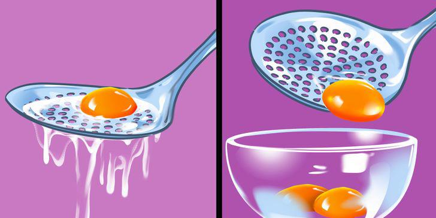

9 mẹo nấu ăn cực hay khiến người lười bếp núc đến mấy cũng mê mẩn liền!
Nhờ có những mẹo nấu ăn đơn giản nhưng cực hữu ích này khiến việc vào bếp dễ dàng như trở bàn tay.
1. Làm nóng đều thức ăn trong lò vi sóng
Bạn có thể nhận thấy rằng sau khi hâm nóng thức ăn trong lò vi sóng, phần giữa không nóng lắm, trong khi các cạnh của đĩa thì có. Điều này xảy ra vì lò vi sóng đang truyền sóng đến thức ăn của bạn, nhưng không làm nóng thức ăn từ bên dưới như lò nướng. Để tránh cho lò vi sóng làm nóng thức ăn của bạn không đều, chỉ cần làm để trống ở giữa đĩa, thức ăn xếp đều xung quanh đĩa là được. Đảm bảo theo cách này thức ăn sẽ được làm nóng đều hơn.

2. Bảo quản để khoai tây không mọc mầm
Khoai tây nếu không biết cách bảo quản sẽ bị mọc mầm phải vứt bỏ, vô cùng lãng phí. Hãy để một quả táo trong giỏ khoai tây , rồi cất vào chỗ tối và mát mẻ thì khoai tây sẽ hạn chế mọc mầm. Tránh để khoai tây ở gần hành tây .

3. Tách lòng trắng với lòng đỏ trứng không cần dụng cụ chuyên dụng
Không cần đến dụng cụ chuyên dụng tách lòng đỏ ra khỏi lòng trắng trứng, bạn chỉ việc sử dụng chiếc muôi thủng trong nhà. Đập trứng vào muôi thủng lỗ, lòng trắng tự động chui qua lỗ xuống dưới, lòng đỏ được giữ lại bên trên.
4. Mài dao
Dao làm bếp cũng cần được làm sắc thường xuyên nếu không nó sẽ bị cùn. Nếu không có dụng cụ mài dao, bạn có thể tận dụng đáy cốc hoặc đáy đĩa. Tìm chiếc cốc hoặc đĩa có đày sờ vào không mịn, rồi mài dao theo góc nghiêng 45 độ dao sẽ sắc trở lại.

5. Giữ dâu tây tươi lâu hơn bằng cách rửa với giấm
Dâu tây là loại quả có thể thối rữa rất nhanh. Vì vậy, để giữ cho chúng luôn tươi mới nhất có thể, hãy sử dụng tuyệt chiêu này. Rửa quả dâu trong chậu nước pha giấm. Bạn cần 1 chén giấm trắng và 8 cốc nước. Để dâu tây trong chậu một lúc, sau đó để ráo nước và rửa sạch.

6. Khử mùi hôi của lọ thủy tinh/lọ nhựa bằng giấy báo
Khi một chiếc lọ có mùi hôi, ngay cả khi bạn đã rửa sạch, bạn nên sử dụng một mẹo đặc biệt, nhưng vô cùng đơn giản. Giấy báo có thể hấp thụ mùi hôi. Lấy vài tờ báo và vò chúng lại. Sau đó cho chúng vào bên trong lọ hoặc hộp nhựa. Bây giờ để nó trong 24-48 giờ thì lọ sẽ hết mùi hôi.

7. Khử mùi hôi tủ lạnh bằng baking soda
Rau và trái cây thối, thức ăn hỏng... có thể để lại mùi hôi trong tủ lạnh lâu ngày. Nếu bạn muốn ngăn ngừa và khử mùi hôi, hãy đặt một hộp baking soda vào tủ lạnh. Bản thân nó không có mùi, nhưng nó rất tốt để hấp thụ mùi.
8. Giúp bánh quy luôn tươi ngon
Bánh quy để lâu có thể bị khô cứng mất ngon. Vì thế hãy mở lọ thủy tinh ra, bỏ một miếng táo vào, bánh quy sẽ giữ được hương vị tươi ngon.

9. Tránh đứt tay khi thái thịt, rau củ
Để tránh bị đứt tay khi thái thực phẩm, hãy tự chế một dụng cụ bảo vệ tay. Bạn chỉ cần một chai nhựa và một sợi dây chun. Lấy một chai nhựa bình thường (như coca hoặc chai khoáng) và cắt một miếng ở đầu chai, như trong hình. Sau đó đục 2 lỗ ở mép và luồn dây chun vào. Bây giờ bạn có thể sử dụng nó bằng cách đeo miếng bảo vệ này vào ngón tay của bạn trong khi thái thực phẩm.